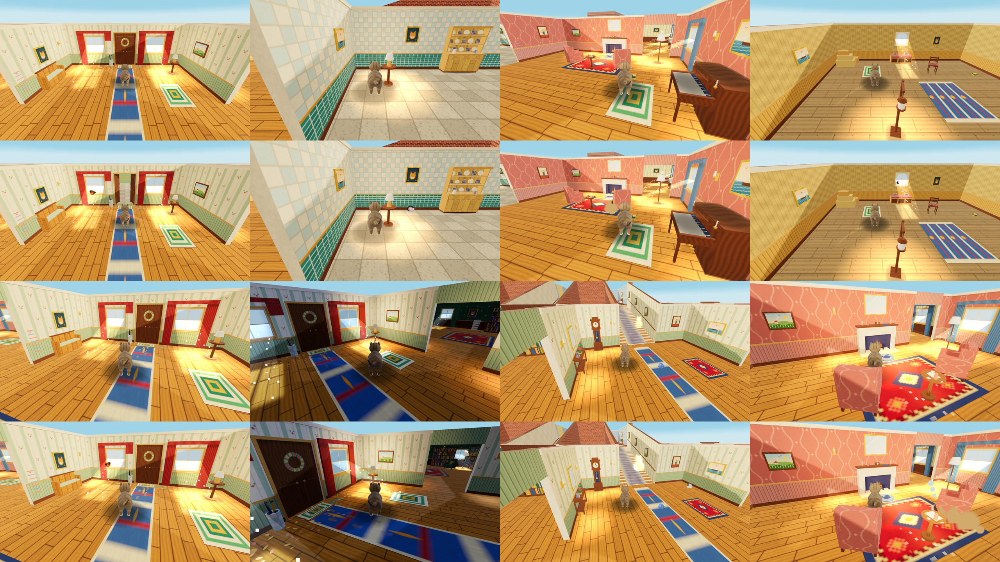

Rows 1 and 3: main. Rows 2 and 4: this branch. Same shots, same play camera (page: verify-oldhouse-beauty.html via scripts/record-page.mjs; new params warp=S and now=H; shots p5-*).
Top pair (left to right): 1. Arrival at the front door: the door stands open, the hall lamp is still warming, a robin sits on the window sill. 2. The kitchen: the mouse peeks out of its hole by the dresser. 3. The parlour: the old dog asleep on the rug by the armchair. 4. The attic: a spider on its thread in the round window.
Bottom pair: 5. The robin on the hall sill, close. 6. The hall at night (22:00): moths round the lamps. 7. The big stair with the old house's ghost cat (bigger and brighter). 8. The parlour: the music box playing, with its glow and notes (bigger), and the dog on the rug.

Honest read: the creatures are a few soft points each, so at the play camera they are small. The open door, the robin, the dog, the mouse's head at its hole and the spider against the window read; the moths read as pale dots round a lamp; the ghost cat is bigger but still faint. The rest of the pass (one daily rhythm, one draught, sound beds by room, the arrival's creak and chime, dust bunnies that scoot when she dashes) cannot be seen on a still sheet.